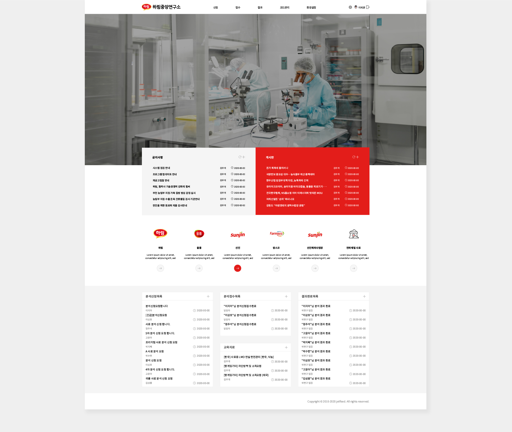

하림중앙연구소 그룹웨어 리뉴얼
OVERVIEW
하림중앙연구소의 포탈 그룹웨어 디자인은 이전에 제일사료 포탈디자인을 기반으로 하여 새롭게 디자인되었습니다. 이 디자인은 기존의 디자인을 참고하되, 하림중앙연구소의 브랜드 컬러와 메뉴 구성을 완전히 새롭게 조정하여 제작되었습니다. 새로운 디자인은 사용자들이 더욱 쉽고 편리하게 포탈을 이용할 수 있도록 개선되었습니다.
- TYPE.
- Wed design
- CLIENT.
- 하림중앙연구소 그룹웨어
- Individual work.
- 2020.11 (1 weeks)
- 작업내역
-
포토샵
XD
일러스트
편리한 퀵메뉴와 브랜드 컨셉을 담은 이미지
직관적인 디자인과 포인트 컬러외 절제된 컬러를 사용하려 노력함으로써 깔끔하고 브랜드컬러의 이미지를 디자인적으로 담으려고 노력하였다.
사용자 빈도수와 중요도에 따라 상단과 하단에 배치함으로써 고객에게 편한 UI로 다가가려고 노력하였다.
